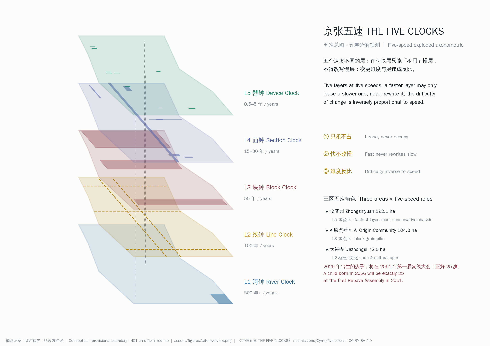
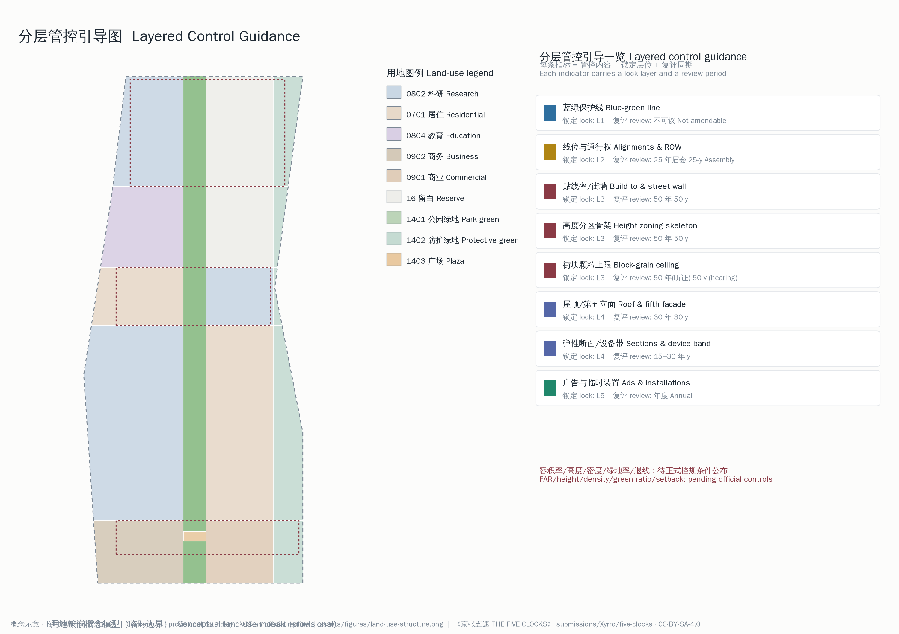
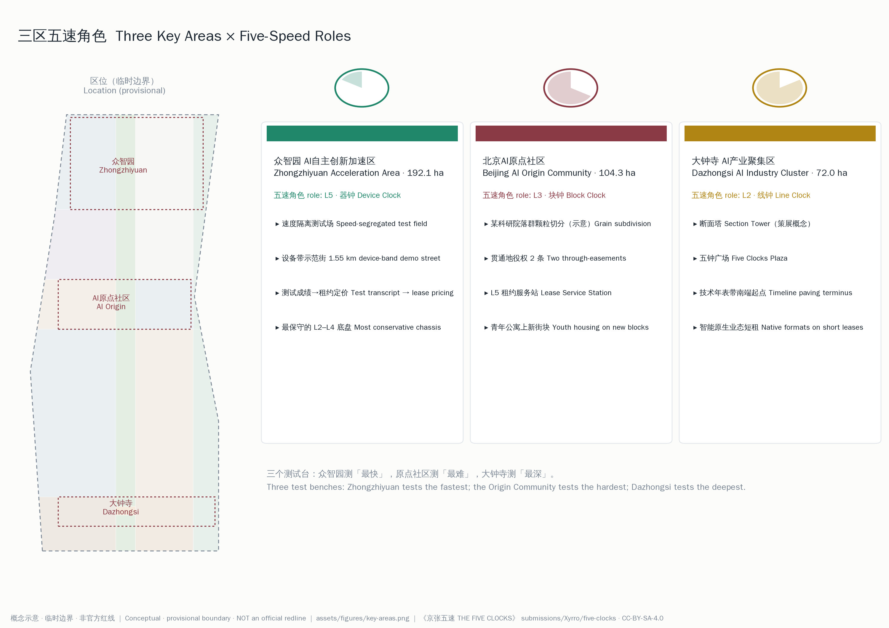
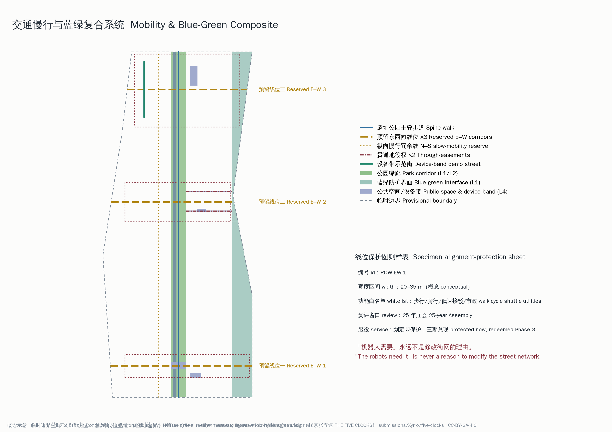
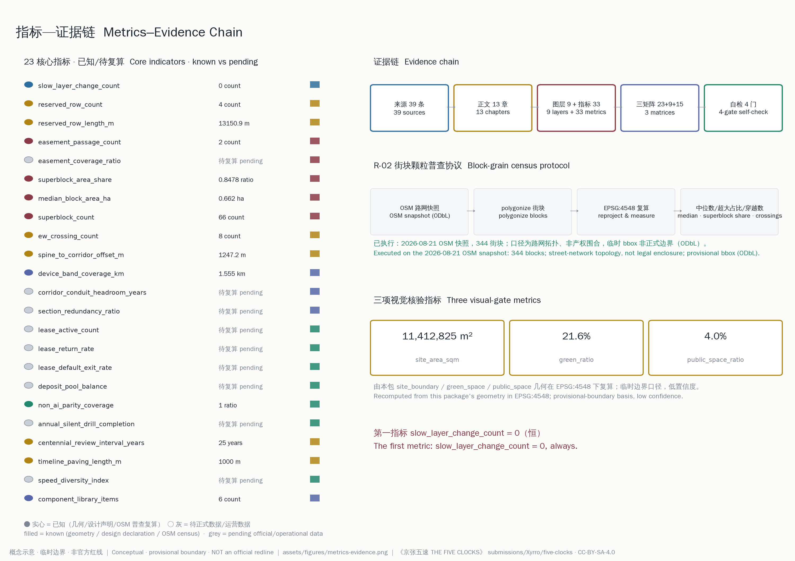

THE FIVE CLOCKS OF JING-ZHANG: A Chassis for the Next Hundred Years
AI turns over on the order of eighteen months; a city must last a hundred years. This proposal resolves the innovation belt into five speed layers: a hydrological constant, a hundred-year alignment, fifty-year blocks, thirty-year sections, and a device layer measured in years. Fast layers lease, never occupy; the difficulty of changing any layer is inversely proportional to its speed; and a Repave Assembly every twenty-five years turns 'centennial' into a procedure. All spatial recommendations are conceptual and based on a provisional boundary.
THE FIVE CLOCKS OF JING-ZHANG: A Chassis for the Next Hundred Years
Executive Summary
This belt consists of five layers moving at different speeds. Each layer renews on its own cycle; any faster layer may only "lease" slower layers, never rewrite them; and the procedural difficulty of changing a layer is inversely proportional to its speed.
That is the entire criterion of this proposal; every chapter that follows is its unfolding at one spatial scale or another. The subtitle is a single sentence: design, for the next hundred years, a chassis that never needs redrawing.
The argument takes four steps. First, the contradiction: frontier AI models iterate roughly every six months to two years and the cadence is accelerating, while an urban chassis is expected to last a century — a speed mismatch of dozens of times Source. Customizing a city for any single technology generation means performing surgery on the city at every generational turnover. Second, the methodology: century design is not century prediction. Conzen's town-plan analysis shows that street networks outlive plots and plots outlive buildings Source; Brand resolves buildings into six shearing layers changing at different speeds Source; Rossi names the urban artifacts that withstand time "permanences" Source; Habraken institutionally separates supports from infill Source; and Beijing's strategic-reserve-land system makes "not deciding yet" itself a land-use category Source. They converge on one conclusion: to design for the unpredictable is to build the un-guessable layers solidly and to give the guessable layers standard interfaces.
Third, the site's own evidence: the Jing-Zhang Railway broke ground in 1905 and opened in 1909 Source; it carried steam, diesel, and electric traction; on 30 December 2019 the Jing-Zhang high-speed railway opened and dived underground through the Qinghuayuan Tunnel Source, and the surface became a heritage park Source. Five or six generations of technology have turned over, yet the alignment and its relationship to the blocks beside it have persisted for roughly a hundred and twenty years. The law this site proved over the last century: the alignment outlives every train. Fourth, the translation into a task: what this proposal delivers is therefore not a "collection of AI scenarios" but five speed layers, the interface rules between them, and change procedures inversely proportional to layer speed — an urban chassis on which ten generations of not-yet-existing technology can safely enter and safely exit.
Each layer carries one "city clock": the River Clock (L1, 500+ years), the Line Clock (L2, 100 years), the Block Clock (L3, 50 years), the Section Clock (L4, 15–30 years), and the Device Clock (L5, six months to five years). The period figures are design assumptions, not empirical measurements [assumption:A-CLOCK-001]. Between layers there are only three laws: lease, never occupy; fast never rewrites slow — "the robots need it" is never a reason to modify the street network; and difficulty inversely proportional to speed — filing, permit, hearing, Repave Assembly, not amendable: a five-step procedural staircase (a procedural design proposed here, not an existing statutory procedure) that makes "no change" the default state. Every instrument sits inside the existing planning toolbox: blue-green protection line, alignment-protection regulating plan, easement clause, elastic section atlas, lease filing Depth.
"Centennial" is not an adjective here; it is a procedure: the Repave Assembly, held once every twenty-five years — 2026 baseline, 2051, 2076, 2101, 2126 — is the only window in which motions to change L2 alignments may be tabled Metric [assumption:A-ASSEMBLY-001]. A child born in 2026 will be exactly 25 at the first Repave Assembly in 2051. The first generation of adult participants in the Repave Assembly is being born this year.
One person's day can tell the whole institution. Her name is Xiaoman, born in 2026 in an old neighborhood south of Dazhongsi (persona P6). At eight she finds the year of her birth engraved on the timeline paving; the notch beside it is empty — and further north, the notches for 2051 and 2076 are empty too. Her mother tells her the empty notches are reserved for her generation. At twelve she watches the five dials on Five Clocks Plaza: the Device dial spins visibly fast; she stares at the River dial all afternoon and cannot see it move. At nineteen she files a one-year lease for her school's co-created installation on the device-band demonstration street; the ledger plate on the lamppost shows the expiry date and the words "default exit on expiry." The year she turns twenty-five is 2051; she sits in the public gallery of the first Repave Assembly, and in the baseline archive spread on the table are all the agent proposals of this 2026 open call — including this one Depth.
All spatial and numerical conclusions are conceptual recommendations, generated on the repository's provisional rough boundary; they constitute neither official redlines, nor approval bases, nor engineering feasibility conclusions, and are offered for professional teams to deepen [assumption:A-BND-001].

Fig. 1 · The five-speed master plan. Exploded axonometric of the five speed layers with the three-zones-two-wings structure. Conceptual; based on a provisional rough boundary; not an official redline.
Design Basis and Source List
The first basis of this proposal is the official pre-qualification announcement of the Centennial Jing-Zhang AI Innovation Belt international urban design solicitation together with the repository site package Source Source; the second is the agent-facing open-call taskbook — the three positionings, five functions, three zones and two wings, six agent tasks, and the unified boundary clause are all within this proposal's scope of response Source Standard. Source usability follows the repository's central registry, which distinguishes formal-ready, background-only, and provisional materials Source, with the processed fact pack as the navigation layer Source.
Source Tiers and Usage Boundaries
This proposal adopts the customary five-tier evidence classification: official, background, provisional, design (this proposal's own declarations), and unknown (pending official data). Any field without reliable material is left blank and registered as a gap — never narrated over.
| Tier | Typical items in this proposal | Permitted use | Forbidden use |
|---|---|---|---|
| official | Announcement, taskbook, three-scope areas, local standard references | Formal conclusions, area figures, task responses | — |
| background | Jing-Zhang history and HSR reporting, case materials, HD00-1601 approval reporting | Narrative context, case readings | Spatial control conclusions, parcel-level indicators |
| provisional | Provisional rough boundary and derived geometry | Generation, display, interim self-check | Official redline, precise areas, approval basis |
| design | Layer periods, reserved corridors, lease clauses, metric target ranges | Conceptual recommendations, institutional design | Statutory planning conclusions, government commitments |
| unknown | Regulatory controls, block-grain baseline, conduit headroom | Gap registration, recalculation triggers | Masquerading as known fact |
The three most important boundary declarations. First, every spatial layer in this package is generated on the repository's provisional rough boundary — it is not an official redline and must not serve as an approval basis or a precise-area basis; once the official boundary is published, the boundary, key areas, land use, green space, public space, buildings, and phasing layers and their derived metrics must all be recalculated Spatial data [assumption:A-BND-001]. Second, regulatory control conditions (FAR, height, density, green ratio, setbacks) are unpublished; the corresponding indicators are uniformly recorded as pending official data Metric [assumption:A-CONTROLS-001]. Third, according to public reporting, the block-level regulatory detailed plan for the blocks along the Jing-Zhang Railway Heritage Park (AI innovation district key area), HD00-1601 et al. (2024–2035), was approved on 11 August 2026, establishing a "one belt, one axis, two centers, many nodes" structure Source. The plan number, approval news, and structure wording are media-reported only, not independently verified, and not used for formal planning judgments. Its drawings are not public and this proposal cites none of its parcel-level indicators; this proposal positions itself as a conceptual deepening built upon that approved plan — connected to it, never parallel to it. The five-speed regulating plan adds a time-dimension control field to the existing statutory framework rather than drawing a rival map.
The Site Fact Chain
The chain of facts behind the core claim — "the alignment outlives every train" — is fully traceable:
| # | Fact | Year/value | Source |
|---|---|---|---|
| 1 | Jing-Zhang Railway groundbreaking | 1905-10-02 | Source |
| 2 | Completion and opening (first trunk railway designed and built by Chinese engineers, chief engineer Zhan Tianyou) | 1909 | Source Source |
| 3 | Jing-Zhang HSR opening (world's first 350 km/h smart high-speed railway) | 2019-12-30 | Source |
| 4 | Qinghuayuan Tunnel (single-bore double-track, 6.02 km); the HSR dives underground south of Xueyuan South Road | holed through 2018 | Source |
| 5 | Heritage park Wudaokou launch section unveiled (~800 m, 1.7 ha) | 2019-09-19 | Source |
| 6 | Heritage park planned at ~9 km, co-creative international solicitation | 2020–2021 | Source |
| 7 | Heritage park Phase 1 Zone C trial operation | 2023 | Source |
| 8 | HD00-1601 block regulatory plan approved (as reported; not independently verified) | 2026-08-11 | Source |
Theory and policy anchors (Brand, Conzen, Rossi, Habraken, strategic reserve land, the Beijing Urban Renewal Regulation, the Civil Code easement provisions, the Beijing River and Lake Regulation) and the eight global cases are fully registered in the source list; each chapter cites them beside the judgments they support. Professional standards are answered in the standard matrix: the Urban Design Administrative Measures, the Regulatory Detailed Planning Compilation Measures, and the land-use classification guide are the drafting bases for this proposal's control instruments Standard Standard Standard; the official text of the architectural design-depth regulation lacks a local reference and is registered as a data gap rather than a satisfied basis. The interim measures on generative AI services, the Barrier-Free Environment Law, and the smart-technology-for-the-elderly policy form the superior bases of the L5 lease compliance clauses Standard.
Differentiation from Neighboring Proposals
More than eight hundred proposals are already merged in this repository. Six are conceptually closest; the differences are volunteered here:
| Neighboring proposal | Its thesis | This proposal's upgrade |
|---|---|---|
| Three "Slow Variables" proposals | A fast/slow binary about governance tempo | Upgraded to a five-speed continuum, each layer landing on an existing planning instrument (regulating plan / easement / section atlas / lease) |
| "THE SHARED FLOOR" | Model-swap slots at the service layer | This proposal works at the plan and morphology layer; its deliverables are regulating plans, not contracts |
| "THE BALLAST" | Making one load-bearing layer visible and maintainable | This proposal covers the full spectrum from hydrology to devices, with change procedures |
| "Century Base · 100-Day Plugins — a Three-Speed City" | A 100y/10y/100d stack with software-style "temporal firewall" and "version protocol" | No software metaphor here: each of five layers anchors to a statutory or quasi-statutory planning instrument; change climbs an administrative staircase of filing–permit–hearing–assembly; a hydrological constant layer and a 25-year assembly are added |
This proposal deliberately describes the city in no software metaphors. The users of the slow layers are institutions that outlive any software paradigm: regulating plans, easements, hearings, and assemblies were chosen precisely because they have already crossed several technology paradigms and remain readable and executable. Writing the slow layers in the language of the fast layers is the first error this proposal is built to prevent.
One-line positioning: from binary to five speeds, from principles to regulating plans, from slogans to procedures. Depth
Three-Level Scope Framework
The three scopes are the same five-speed structure developed at three scales: the 43.6 km² Coordinated Research Area answers "five speeds as the organizing frame of industry and urban form"; the 11.4 km² Overall Design Area answers "how five speeds are written as regulatory-plan-style layered control guidance"; the 368.4 ha of three key areas answer "what role each speed plays in real blocks" Source Depth.
| Scope | Area | Textual limits (announcement) | Working depth here |
|---|---|---|---|
| Coordinated Research Area | 43.6 km² | North Fifth Ring; Jingzang Expressway; Xizhimenwai Street; Wanquanhe Road | Industrial speed structure, regional synergy interfaces (Ch. 3) |
| Overall Design Area | 11.4 km² | Urban and industrial areas within 1–2 km of the heritage park; bounded by the North Fifth Ring, Xueyuan Rd/Xitucheng Rd, Xizhimenwai St, Dazhongsi East Rd/Heqing Rd | Five-speed regulating plan: layered control guidance (Ch. 4) |
| Key-Area Detailed Design Area | 368.4 ha | North to south: Zhongzhiyuan 192.1 ha, AI Origin Community 104.3 ha, Dazhongsi 72.0 ha | Three areas × five-speed roles (Ch. 5) |
Provisional boundary declaration (one of the five prominent notices). This proposal uses the provisional rough boundary inferred by the repository maintainers from the announcement's textual limits and area constraints: the Overall Design Area recomputes to 11,412,825 m², within reasonable tolerance of the announced 11.4 km² Metric Spatial data; the three key-area polygons are likewise provisional Spatial data. These polylines are roughly located by road names and do not represent road redlines; they must not serve as official redlines, approval bases, or precise-area bases; the layers and metrics to recalculate once official polygons arrive are itemized in the assumptions register [assumption:A-BND-001]. The organizer's data gap does not affect content review, and this proposal does not relax its own geometric and metric discipline on account of it: the land-use mosaic covers the provisional boundary with a residual gap of only 37 m² and zero overlaps, all areas recomputed in EPSG:4548 Depth.
The R-02 recomputation also quantified a systematic error in the provisional geometry itself: the median perpendicular distance from the package's conceptual spine to the surveyed OSM rail geometry is about 1,247 m (mean 1,061 m, max 2,447 m over 61 samples) Metric, and most of the measured alignment falls west of the provisional envelope's western edge — another entrant independently reported a ~906 m offset in the same direction, corroborating the finding. This is a limitation of the supplied provisional geometry, not of this proposal's construction; the reserved corridors and gap locations are therefore positioned against the measured alignment (Chapter 4), to be corrected wholesale once official redlines publish [assumption:A-BND-001]. The framework-level implication, stated directly: the L2 alignment-protection plan is currently registered against provisional geometry — meaning this proposal's own spine is drawn roughly 1.2 km from the corridor it is about; when the measured corridor (or official geometry) becomes available, the plan's coordinates must be re-registered against it. This is not a data footnote but a change of the plan's registration datum.
To turn "recalculate wholesale once official data publishes" from a promise into an executable action, this proposal pre-commits to the recalculation difference-table template below: when official geometry lands, all eight layers are filled in across the five committed columns — old value / new value / deviation / design impact / adjusted or not — and shipped with the package; until then, every current provisional warning stays in place. The spine offset enters first as the known worked example:
| Layer | Old value (provisional) | New value (official) | Deviation | Design impact | Adjusted? |
|---|---|---|---|---|---|
| site_boundary | 11,412,825 m² | awaiting official redline | tbd | all derived metrics recalculated | to assess |
| key_areas | 3 provisional polygons | awaiting official designation | tbd | detailed-design boundaries of the three key areas | to assess |
| land_use | conceptual mosaic | awaiting regulatory-plan drawings | tbd | land-use structure and reserve parcels | to assess |
| green_space | 21.6% (model value) | awaiting official basis | tbd | blue-green protection line routing | to assess |
| public_space | 4.0% (model value) | awaiting official basis | tbd | carrier of the parity paths | to assess |
| buildings | 52,737 m² conceptual footprints | awaiting building-stock data | tbd | landmark and service-facility placement | to assess |
| roads (spine example) | conceptual spine alignment | OSM measured corridor | median offset 1,247.2 m Metric | reserved corridors and gap locations already repositioned against the measured corridor | adjusted (v4.1; to re-verify once official geometry publishes) |
| phasing | four conceptual phases | follows the layers above | tbd | phase boundaries | to assess |
Transmission between scopes is strictly one-way: the coordinated level defines speed classes and portfolio principles; the overall level translates speed classes into a "lock layer + review period" field on every control indicator; the key-area level lands those fields on concrete blocks and projects. Reverse transmission is institutionally forbidden — no fast-layer demand from a key area (say, one robot generation's clearance width) may travel upward to rewrite slow-layer rules. That is "fast never rewrites slow" expressed in the working framework Depth.

Fig. 2 · Layered control guidance. Left: nested scopes and the conceptual land-use mosaic; right: the double legend of lock layer and review period. Conceptual; provisional boundary; not an official redline.
Coordinated Research Area: Industry and Future City Research
The AI-Adapted Urban Form: A Five-Speed City
The announcement asks for a vision of "a new urban form adapted to AI as a new productive force." This proposal's answer: the new urban form is not "a city with AI everywhere" but "a city where things of every speed stay in their own layer" — a five-speed city. What AI truly needs from space is not more screens and sensors, but an interface order that lets it turn over every eighteen months while the city remains unharmed Source Depth.
The five-speed translation of the three positionings: the Centennial Jing-Zhang Culture Belt is the narrative manifestation of the L2 Line Clock — the alignment itself is the greatest artifact; the Urban AI Life Experience Belt is the interface manifestation of L4/L5 — the device band and the lease let AI enter everyday streets reversibly and accountably; the AI Integrated Innovation Belt is the institutional manifestation of the full spectrum — the leasing relation between layers is itself the spatial grammar of "integration" Source.
The Original Industrial Thesis: Speed Diversity of the Tenant Mix
This chapter has one memorable point: make "speed diversity" the first-order indicator of the industrial portfolio. Classify tenants into speed classes L2–L5 by their product turnover cycles. A park made entirely of L5 fast-layer firms re-bloods itself every eighteen months and has poor cycle resilience; a park that combines L5 applications and hardware (fast), L4 compute and infrastructure (middle), and the planning, legal, financial, and testing services that grow around regulating plans, leases, and deposits (slow) has a steady state that crosses technology cycles. Hence the indicator speed_diversity_index: a Shannon diversity over layer classes, mathematically H′ = −Σ p_i ln p_i Source Metric, where p_i is the share of tenants in speed class i; the classification is a design assumption, first computed from lease-registry data during the pilot [assumption:A-DIVERSITY-001].
The slow-layer service industry is the new industrial track this proposal adds for Haidian. The five-speed institution itself creates employment: plan maintenance, lease examination, deposit custody, test certification, easement negotiation, the Assembly secretariat — a professional services cluster around "managing speed" that answers the announcement's "AI + other leading industries" requirement, and which is itself slow-layered (law firms and testing bodies do not turn over every eighteen months), directly contributing speed diversity to the portfolio Depth.
| Speed class | Typical businesses | Turnover (design assumption) | Spatial need |
|---|---|---|---|
| L5 class | Large-model applications, agent services, robot operations | 0.5–5 years | Leasable device bands, test fields, short-lease desks |
| L4 class | Compute facilities, network and energy operations | 15–30 years | Conduit headroom, machine rooms, elastic sections |
| L3 class | Slow-layer services: planning/legal/finance/testing | Decades | Stable blocks, face-to-face service interfaces |
| L2 class | Culture, education, public governance institutions | Century scale | Institutional places along the alignment |
The industrial indicator framework (AI innovation index, talent density, output scale, etc.) is listed as the announcement requires, with all values expressed as ranges and each tied to an assumption; this proposal fabricates no enterprise lists, investment figures, or output commitments — a taskbook red line and a matter of evidential discipline Source [assumption:A-DIVERSITY-001].
Regional Synergy: Layer Interfaces, Not Cooperation Declarations
Regional synergy is written as "layer interfaces" — interfaces only, never "confirmed cooperation":
| Partner | Interface layer | Interface content (conceptual) |
|---|---|---|
| Beiwei Community | L3/L5 | Mutual recognition of lease-filing formats and ledger-plate visual language |
| Future Science City | L4 | Shared elastic-section atlas and device-band construction standards |
| Huairou Science City | L4 | Joint compute-conduit headroom standards and waste-heat interface specs |
| Beijing E-Town | L5 | Mutual recognition of L5 leases and test-field transcripts (a cross-district test-to-street channel) |
| Beijing-Tianjin-Hebei | L2 | Regional extension of the Jing-Zhang alignment narrative: one line, two cities, five clocks |
Each interface is an institutional component the partner can fork, not a project awaiting the partner's signature — consistent with the open-source methodology brand in Chapter 10 Depth.
Overall Design Area: Urban Renewal and Regulatory-Plan-Level Urban Design
The Five-Layer Matrix: The Skeleton of the Proposal
The deliverable of the overall design is a "five-speed regulating plan." First, the skeleton table of the whole proposal — five layers, five clocks, five instruments, five procedural steps:
| Layer | Clock | Period* | Elements | Instrument | Change procedure | Layers in geometry |
|---|---|---|---|---|---|---|
| L1 Site & hydrology | River Clock | 500 y+ | Qinghe, Xiaoyue River and waterfront buffers, landform datum, heritage trees (public records) | Blue-green protection line | Not amendable (record only; "constitutional") | green space / blue-green interface |
| L2 Alignments & street network | Line Clock | 100 y | Jing-Zhang alignment (heritage park corridor), trunk-street rights of way, 3 new reserved E–W corridors + 1 N–S slow-mobility redundancy line | Alignment-protection regulating plan (per corridor: id / width range / function whitelist / service dates / review window) | Only at the 25-year Repave Assembly | road centerlines |
| L3 Block grain | Block Clock | 50 y | Block and tenure grain, campus-compound edges, public through-passage easements | Grain guideline + easement clause (a superblock applying for renewal donates a through-passage easement: minimum width + 24 h open) | Public hearing | land use / public space |
| L4 Sections & supports | Section Clock | 15–30 y | Elastic street sections, curbside device band (0.8–1.5 m reversible mounting strip), utility-conduit headroom, support/infill (SI) separation in new buildings | Atlas of three elastic standard sections + device-band construction details | Planning permit | public space / building footprints |
| L5 Devices & AI | Device Clock | 0.5–5 y | All AI devices, sensors, robots, interfaces, models | Lease system, five elements: layer / term / deposit / restoration duty / non-AI parity path + on-site ledger plate + deposit pool | Routine filing; default exit on expiry | scenario nodes |
* Period figures are design assumptions [assumption:A-CLOCK-001]. The naming echoes Dazhongsi: the Yongle Great Bell tolls the hour; the five clocks of Jing-Zhang toll the era Source.
The Three Interface Laws
1. Lease, never occupy. Every L5 occupation of L2–L4 is a lease with term, deposit, and restoration duty; time is equally leasable — night hours, time-shared lanes — and time leases rank equally with space leases [assumption:A-LEASE-001]. 2. Fast never rewrites slow. No fast-layer demand constitutes grounds for slow-layer change — "the robots need it" is never a reason to modify the street network; the priority runs the other way: slow layers serve humans first, and a non-AI parity path is a mandatory contract clause of every lease (a contract mechanism this proposal defines, not an existing statutory duty) Metric. 3. Difficulty inversely proportional to speed. L5 filing < L4 permit < L3 hearing < L2 Repave Assembly < L1 not amendable. The default state is "no change"; the burden of proof always sits with whoever wants change.
The key design point: reversible by default. Comparable proposals often promise that installations are "removable," but removal always requires someone to act; this proposal makes reversibility the default path — an L5 lease exits by default on expiry: no renewal = automatic removal; it is renewal that requires an application. Inaction restores the street. This is the fundamental difference between the lease system and ordinary "temporary facility management" Metric [assumption:A-LEASE-001].
The three laws map onto the five-step procedural staircase as follows:
| Layer | Change procedure | Deliberating body (conceptual · unassigned) | Burden of proof | Typical application |
|---|---|---|---|---|
| L5 | Filing (default exit on expiry) | Lease registry | Applicant | Scenario cards S01–S12 |
| L4 | Planning permit | Planning authority | Applicant | Section changes, device-band additions |
| L3 | Public hearing | Hearing + rights-holders | Applicant | Grain subdivision, easement creation |
| L2 | Repave Assembly (25-y window) | The Assembly plenary | Movant | Alignment-change motions |
| L1 | Not amendable (proposal-defined) | — (record only) | Not admissible | — |
The legal standing of the procedural settings above, and of the proposal at large, is stated directly here — four key mechanisms are each broken into "current legal basis / part yet to be created / professional body that must confirm," and no yet-to-be-created mechanism is presented as an existing statutory procedure:
| Mechanism | Current legal basis | Yet to be created | Body that must confirm |
|---|---|---|---|
| Through-passage easements | The consensual-easement regime of the Civil Code, Property section, arts. 372–385 Source | Standardized easement contract texts and registration workflow across multiple rights-holders | Real-estate registration authority, rights-holding entities, planning authority |
| Repave Assembly (25-year) | No direct counterpart; the Urban Renewal Regulation's public-participation and hearing procedures are reference points Source | Institutionalized session rules, source of authorization, and force of resolutions | District people's congress and planning commission, legislative-affairs bodies |
| Deposit-pool custody | Existing licensed-institution fund-custody supervisory practice (by analogy) | Dedicated custody-account rules for street-device leases [assumption:A-FUND-001] | Financial regulator, licensed custodian bank |
| Test admission (speed zoning) | Existing intelligent-connected-vehicle testing management frameworks (by analogy) | Tiered admission, scorecard linkage, and exit rules for street devices | Sector authority, district administration |
All four are conceptual proposals of contract mechanisms or procedural designs that require confirmation by the bodies above before taking effect; the word "statutory" is reserved in this proposal for existing legal institutions (the Civil Code easement, the river-protection regulation).
Each of the four mechanisms further carries a seven-field implementation card (initiation basis / lead and cooperating bodies / legal documents required / pilot scale / suspension conditions / dispute resolution / exit path), plus a cost-model line. Entries name body types, not specific institutions; wherever a body genuinely cannot be pre-named, the card states which level of government would designate it. Cost lines are order-of-magnitude range estimates [assumption:A-IMPL-COST-001]:
| Field | Repave Assembly | Deposit-pool custody | Cross-tenure easements | Cross-district recognition |
|---|---|---|---|---|
| Initiation basis | Deliberative mechanism established by decision of the district government or planning authority; first session launched through urban-renewal public-participation procedure | Custody agreement signed with a licensed financial institution | Rights-holders voluntarily conclude consensual easement contracts (Civil Code arts. 372–385) | Memorandum of mutual recognition signed by two district administrations |
| Lead & cooperating bodies | Planning authority leads; the organizing body is designated by the district government; district people's-congress organs, sub-district offices, rights-holders, resident representatives cooperate | Licensed custodian bank administers the account; filed with the financial regulator; district administration and lease registry cooperate | Real-estate registration authority registers; planning authority confirms plan linkage; rights-holders' legal counsel participates | Both district administrations lead; test-field operator and lease registry cooperate |
| Legal documents required | Session-rules charter, resolution templates, authorization documents (reviewed by district legislative-affairs body) | Custody agreement, deposit-clause templates, refund-acceptance procedure | Standardized easement contract text, registration application, passage-management covenant | Memorandum, transcript-conversion standard, filing-format concordance |
| Pilot scale | First session's agenda limited to the 4 reserved corridors within the 11.4 km² area | Deposits of the first 12 scenario cards (single demo street) | The 2 conceptual passages in the Origin Community (~820 m) | First batch limited to one-way recognition of L5 test transcripts |
| Suspension conditions | Agenda halts and yields whenever a statutory plan-adjustment procedure starts | New intake frozen upon custodian-qualification change or regulatory opinion; existing balances settled per agreement | Any rights-holder exercising a contractual suspension right pauses passage and opens consultation | Any party's safety incident or standard change suspends new recognitions |
| Dispute resolution | Resolutions are advisory only; disputes transfer to statutory planning procedures (hearing/review) | Arbitration per contract clause, submitted to a district-level arbitration-institution type | Contractual mediation → arbitration/litigation path | Joint-committee consultation; failing that, recognition halts and independent review resumes |
| Exit path | Two consecutive sessions without motions converts the mechanism into an archival commemoration | On termination, deposits refunded in full per agreement | On expiry or contractual termination: registration cancelled, restoration to original state | Memorandum lapses if not renewed; existing leases run to expiry on original terms |
| Cost model (range estimate) | Per-session logistics and publicity on the order of one statutory hearing procedure | Custody fees at market custody-service rate ranges | Compensation and maintenance per comparable passage-agreement ranges | Joint-review administrative cost, low order of magnitude |
The Refusal List
What we will not do matters as much as what we will. Five self-restraints:
1. Never customize slow layers for any single technology generation — no design parameter of the street network, blocks, or sections cites any current device's spec sheet; 2. L5 leases only, no exceptions — there is no "strategic project" bypass; 3. No century promises on fast layers — every L5 installation's display language must state its lease term; 4. No five-year experiments on slow layers — slow-layer actions go only through their statutory procedures; 5. This proposal explicitly refuses to predict the technology of 2126. Refusing to predict is not evading the question; it is the method itself. The empty future notches on the timeline paving are that refusal made physical.
The Five-Speed Regulating Plan: One Time Field on Every Control Indicator
The announcement requires "control guidance on building height, intensity, character, roof form, and massing." This proposal's single methodological innovation runs through every indicator: each control indicator gains two fields — lock layer and review period. Control turns from "one terminal blueprint" into "a set of dials turning at different speeds":
| Control indicator | Lock layer | Review period | Control statement (all conceptual frameworks) |
|---|---|---|---|
| Blue-green protection line | L1 | Not amendable (proposal-defined) | River/lake protection ranges and waterfront green belts per statute Source |
| Alignments and trunk rights of way | L2 | 25-year Assembly | Alignment-protection plan registers width ranges and function whitelists per corridor |
| Build-to line and street wall | L3 | 50 y | Build-to ratio ranges along principal streets |
| Height zoning skeleton | L3 | 50 y | Skeleton and ranges only; no approved values [assumption:A-CONTROLS-001] |
| Block grain ceiling | L3 | 50 y (hearing-adjustable) | Ceiling range on new parcel sizes + superblock renewal triggers the easement clause |
| Roof form and fifth facade | L4 | 30 y | Fifth-facade guidance toward heritage-park sightlines |
| Elastic sections and device band | L4 | 15–30 y | Three standard sections + 0.8–1.5 m device-band details |
| Advertising, interfaces, temporary installations | L5 | Annual | Lease filing with public ledger plates |
The output is the Layered Control Guidance Schedule (the tabular form of Fig. 2). Indicators lacking official regulatory conditions (FAR, height, density, green ratio, setback) are uniformly recorded as pending official data with registered recalculation paths Metric [assumption:A-CONTROLS-001] Depth. Height, massing, and character controls are expressed as zoning skeletons plus ranges, supporting the Urban Design Administrative Measures' requirement to coordinate building layout and landscape character Standard Depth.
The Urban Renewal Framework: A Diagnosis of the Double Cut, and Retain-First
The R-02 block-grain census has been computed on the 2026-08-21 OSM snapshot (the figures describe street-network topology, not legal property enclosure; method, script, and full output in Appendix A [assumption:A-GRAIN-001]). The diagnosis in one sentence: the belt is cut twice — lengthwise by the railway that remains at grade, and crosswise by compounds averaging 16.7 hectares.
The first cut is grain (the L3 lesion). The 344 blocks in the reporting area are extremely bimodal: the median block is only 0.662 ha Metric while the mean is 3.77 ha — a 5.7x skew that shows the average hides the structure; 66 superblocks over 4 ha (19.2% of all blocks Metric) hold 84.8% of the total 1,298.0 ha of block area Metric. The mean superblock is 16.7 ha against 0.71 ha for everything else — a 23x gap, with almost nothing between the two modes. Sensitivity: counting compound-internal service/living_street as public streets still yields 69.0% (median 0.523 ha, 17x) — but that filter treats internal driveways as public passage and therefore OVERSTATES public permeability, so 69.0% is a lower bound and 84.8% is the better estimate of the public realm. Validation: total block area 1,298.0 ha against the 1,294.7 ha reporting envelope is a +0.25% deviation — the polygonization tiles the study area cleanly. The grain guideline and the easement clause are precisely the instruments aimed at this lesion Depth.
The second cut is the alignment (the L2 lesion). Per-line measurement with tunnel and covered segments excluded shows: the Jing-Bao HSR (京包客专线) is 84.4% tunnel within the study latitudes — 13,487.6 of 15,986.7 m underground, only ~2,499 m at grade: the 2019 undergrounding is now quantified, not asserted. What remains a barrier at grade is the conventional 京包线: 6,504.7 m of surface alignment crossed by east–west streets at only 8 points, one per 813 m on average Metric — stated in the same sentence: only 18.5% of that line lies inside the strict provisional reporting envelope, because the measured corridor lies as a whole to the west of the provisional envelope (the envelope is displaced east relative to the corridor; quantified in Chapter 2). Maximum gap 1,110.2 m; four gaps over 800 m; the five gaps over 400 m total 4,550.1 m — about 70% of the at-grade line. The sparsest contiguous stretch runs from station 2,617 to 5,861 m (latitudes 39.9568–39.9847): 3,243.2 m with only 2 crossings, one per 1,622 m — the three reserved east–west corridors are located against this low-permeability band. The spatial relation stated plainly: the band's latitudes (39.9568–39.9847) fall entirely inside the study range; only its longitudes sit at or west of the reporting envelope's western edge. The reserved corridors run east–west, cross the measured corridor at its actual location, and extend east into the Overall Design Area — the alignments themselves are not outside the study area. A further unnamed disused/razed line (very likely the Jing-Zhang heritage alignment itself) is 100% at grade with 67.3% inside the reporting envelope, but OSM fragments it into components of at most 862 m — a data-completeness limit, not a statement about physical continuity, so it is reported as a located gap inventory with no spacing claim; the Jing-Zhang Railway Heritage Park does exist in OSM (14 features matched) but its polygons give under 50% north–south coverage, so no centerline could be built — again a data limit. The earlier proxy-meridian reading ("one crossing per 249 m, the corridor is permeable") is corrected here: the proxy measured dense street fabric, not the corridor.
Gaps over 400 m on the at-grade 京包线 (snapshot 2026-08-21; © OpenStreetMap contributors, ODbL):
| # | Gap length m | Latitude band | Station m |
|---|---|---|---|
| G1 | 1,110.2 | 39.9568–39.9665 | 4,750–5,861 |
| G2 | 1,069.2 | 39.9752–39.9847 | 2,617–3,687 |
| G3 | 1,063.8 | 39.9665–39.9752 | 3,687–4,750 |
| G4 | 848.8 | 39.9916–39.9992 | 1,004–1,852 |
| G5 | 458.1 | 39.9853–39.9894 | 2,095–2,553 |
The corridor and five gap geometries now ship in this package under separate ODbL attribution Spatial data (layer EXISTING_RAIL, role: measured existing condition, not an official control line, not folded into this package's CC-BY-SA-4.0 grant). Reproducibility check: the participant independently re-ran the v5 script on 2026-08-23, and the corridor and gap outputs matched the 2026-08-21 run exactly (5,330 B and 6,414 B, byte for byte) — the computation is deterministic and exactly reproducible.
The diagnosis lands back on instruments: the three reserved corridors target the 3.24 km low-permeability band (mending the lengthwise cut); the easement clause targets the 23x grain divide (opening the crosswise cut). Both are rights-reservation problems, not road-construction problems: only the right of passage is reserved on paper now, and the road itself is left to whichever renewal moment in the next thirty years makes it ripe Depth.
Renewal potential = the L3 lesion map above + aging L4 sections (those without device band or conduit headroom), the latter replaced corridor by corridor from the elastic section atlas.
Retain-renovate-demolish: renovation and retention first, demolition the exception — this proposal's paraphrase of the Beijing Urban Renewal Regulation's orientation of "mainly retaining, utilizing, and upgrading; strictly controlling large-scale demolition and expansion" Source Depth. It is also self-consistent with five-speed logic: demolition is a high-cost intervention on L3/L4, so its procedural difficulty is naturally higher than infill renewal. All renewal actions are conceptual recommendations for regulatory-plan adjustment and renewal programs to deepen.
The conceptual land-use mosaic: the heritage-park green corridor runs north–south Spatial data; the eastern blue-green interface echoes the Xiaoyue River waterfront program Source; two reserve parcels (class 16) hold the decision rights of the generations after the 2051 Assembly Spatial data Source Depth. All land-use areas are low-confidence design-model values [assumption:A-LU-001].
Detailed Design of Key Areas
The three key areas are not three parallel "district designs" but three test benches of the five-speed structure: Zhongzhiyuan tests the fastest, the Origin Community tests the hardest, Dazhongsi tests the deepest. All three polygons are provisional Spatial data [assumption:A-BND-001] Depth.

Fig. 3 · Three areas, five-speed roles. Zhongzhiyuan = L5 test zone; Origin Community = L3 pilot; Dazhongsi = L2 hub and cultural apex. Conceptual; provisional boundary; not an official redline.
Zhongzhiyuan AI Independent Innovation Acceleration Area (~192.1 ha): The Fastest Layer on the Most Conservative Chassis
The positional paradox is the design principle: because L5 turns over fastest here, the L2–L4 chassis here must be the most conservative and most redundant in the whole belt. A test zone is not "a place where anything may be changed" but "a place whose chassis is so stable that anything may be tried."
- A speed-segregated controlled test field: an L2-grade green corridor hard-separates the test zone from the public zone — however wild the tests, the chassis does not move. The eastern flexible reserve receives the test-field layout Spatial data; operating rules are in scenario card S11.
- One device-band demonstration street (R-04): the belt's first complete device-band street, about 1.55 km Metric Spatial data; the 0.8–1.5 m curbside reversible strip is drawn at exaggerated width in the public-space layer Spatial data. If unleased for two lease cycles it is restored — the demonstration street obeys default exit too.
- Test data feeds lease pricing: test-field transcripts set deposit tiers for public-street leases (card S01 demonstrates the channel); the test-field service buildings are conceptual footprints Spatial data.
- Zhongzhiyuan carries "full-stack independent AI innovation" and "global voice in AI governance" among the five functions: the spatial form of governance voice is precisely this forkable test–lease–exit institution Source.
Beijing AI Origin Community (~104.3 ha): The L3 Pilot
The Block Clock ticks once in fifty years; the Origin Community is the only place where this generation winds it — and therefore the most procedurally careful place.
- Grain-subdivision demonstration of a super-sized campus cluster: the object is described as "an unnamed research campus cluster (illustrative)" — no real rights-holder is named [assumption:A-EASE-001]. The subdivision is conceptual Spatial data; the guideline never compels existing stock; if rights-holders decline, the pilot moves to the next candidate cluster (R-06 exit condition).
- Two through-passage easements (conceptual routes): Chapter 15 of the Civil Code's Property Book (Articles 372–385) supplies the statutory basis for easements Source; the two conceptual routes are in the roads layer Spatial data, totaling about 820 m Metric Metric. Tokyo's Otemachi–Marunouchi cross-ownership underground walkway agreements prove such arrangements can run for decades Source.
- The L5 Lease Service Station: ledger plates, deposits, filings in one stop — the citizen-visible face of the institution; the station and its forecourt are conceptual placements Spatial data Spatial data.
- Youth housing on the new small blocks: conceptual footprints Spatial data answer jobs-housing balance and youth-friendliness — the dividend of the L3 reform goes directly to the youngest residents.
Dazhongsi AI Industry Cluster (~72.0 ha): L2 Hub + Cultural Apex
Dazhongsi is the "deepest" station of the five-speed structure: hub of the Line Clock, origin of the five-clock naming Source, and one of the "two centers" in the HD00-1601 reporting Source (media-reported only, not independently verified, not used for formal planning judgments).
- The Section Tower (M1): an enterable vertical section museum — from bottom to top, the 1909 roadbed layer, the conventional rail layer, the 2019 underground HSR layer, the utility corridor layer, and a deliberately empty "future layer" on top. It turns "one alignment stacked with six generations of technology" into a ten-minute vertical walk. The tower is a curatorial structure concept Spatial data and carries no bridge, tunnel, underground-space, or engineering feasibility conclusions — a taskbook red line this proposal strictly observes Source.
- Five Clocks Plaza (M3): five "city clock" installations, each turning at its layer's speed — the Device dial visibly fast, the River dial imperceptibly slow. One plaza makes the whole thesis perceivable: a child who cannot yet read can still see that some things turn fast and some almost not at all. The plaza is conceptual land use Spatial data Spatial data, positioned as public art + science communication, never entertainment.
- Intelligence-native commerce and business scenarios: the station-front public interface and exhibition-trade hall (conceptual footprint Spatial data) receive the taskbook's "intelligence-native new business formats"; tenants enter on short L5 leases with public ledger plates.
- Southern terminus of the timeline paving: the band unrolls northward from here (Ch. 9).
Summary table:
| Area | Five-speed role | Key actions (all conceptual) | First-year KPI (design basis) |
|---|---|---|---|
| Zhongzhiyuan | L5 test zone | Speed-segregated test field, device-band demo street, test-to-lease pricing channel | Demo street built, first ledger plates hung |
| Origin Community | L3 pilot | Grain-subdivision illustration, 2 easements, Lease Service Station, youth housing | Station opens; first easement negotiation framework drafted |
| Dazhongsi | L2 hub + culture | Section Tower and Five Clocks Plaza curation, timeline-paving terminus, intelligence-native formats | Curation and project initiation completed (feasibility separate) |
AI Innovation Ecosystem, Personas, and AI+ Scenarios
This chapter concentrates the responses to agent tasks agent.1, agent.2, and agent.3, each in an explicitly labeled block for reviewers to locate.
[agent.1 Response] Overall Concept and Functional Coordination of the Belt
Overall concept: the five-speed city — see the Executive Summary criterion and the Chapter 4 matrix. Primary name: 京张五速; English name: THE FIVE CLOCKS OF JING-ZHANG (subtitle: A Chassis for the Next Hundred Years); naming system: one city clock per layer — River Clock L1 / Line Clock L2 / Block Clock L3 / Section Clock L4 / Device Clock L5 — echoing the place memory of the Dazhongsi Ancient Bell Museum: the Yongle Great Bell tolls the hour; the five clocks of Jing-Zhang toll the era Source.
Visual identity and Logo direction: a five-ring concentric dial — five rings at different speeds, the outer (River) nearly still, the inner (Device) spinning fast; the static mark captures the phase difference of one instant. The dial doubles as wayfinding language (five-color wayfinding), paving language (five-speed graduated paving), and the display page's motion (the pure-CSS five-ring animation on the visual page's hero). All type and imagery are open-source or self-drawn; no unauthorized trademark, typeface, or likeness is used Source. The five-color semantics are the brand's minimal dictionary:
| Layer | Color | Semantics | Principal applications |
|---|---|---|---|
| L1 River Clock | River Blue | constancy, hydrology | Blue-green line markers, wayfinding ground |
| L2 Line Clock | Line Gold | century, alignment | Timeline-paving marks, covenant-stele inscriptions |
| L3 Block Clock | Block Ochre | grain, blocks | Easement boundary posts, grain-guideline legends |
| L4 Section Clock | Section Grey | support, sections | Device-band markers, section atlas |
| L5 Device Clock | Device Teal | speed, reversibility | Ledger plates, lease posts, installation tags |
Three positionings, five functions, and the three-zones-two-wings loop: the five-speed translation of the positionings is in Chapter 3; the spatial division of the five functions — full-stack independent AI innovation (Zhongzhiyuan), world-class AI innovation ecosystem (Origin Community), AI-enabled scenario paradigm (Xiaoyue River Scenario Enablement Wing), intelligent vibrant AI city (belt-wide L4/L5 interfaces), global voice in AI governance (the forkability of the five-speed institution itself). The loop: the Zhongguancun Technology Services Wing supplies factor allocation and capital enablement — and here also incubates the slow-layer service industry; the Xiaoyue River wing carries the public experience routes (see the agent.3 response). The overall structure diagram is Fig. 1 (exploded five-layer axonometric) and Fig. 2 (layered control guidance); regional synergy is the interface table of Chapter 3; the planning-innovation idea for territorial spatial planning is the five-speed regulating plan: a "lock layer + review period" time field on every control indicator Depth.
[agent.2 Response] Full-Stack Independent AI Innovation System and World-Class Ecosystem
Eight global ecosystem cases, each with a one-line pace-layer reading and one transplant Depth:
| # | Case | Pace-layer reading | Transplant here |
|---|---|---|---|
| 1 | Barcelona 22@ Source | The Cerdà grid (L2) holds while block industries (L5) turn over for a century: slow-layer stability is the precondition of fast-layer iteration | Alignment-protection regulating plan |
| 2 | London King's Cross Source | Railway-land regeneration: twenty-plus heritage structures kept as supports, infill renewed | The Section Tower's "supports kept + curatorial infill" |
| 3 | Tokyo Otemachi/Marunouchi Source | Cross-ownership area-management covenants and the underground walk network: the mature precedent for easement-style public passage | The L3 easement clause |
| 4 | Singapore one-north Source | A 200-ha long-horizon rolling masterplan with phased land release | Reserved corridors and review windows |
| 5 | Xiong'an New Area Source | Utility corridors "underground first, surface after" + reserve mechanisms: the domestic policy-affine case | The L4 conduit-headroom indicator |
| 6 | Kendall Square, Boston Source | Long evolution from industrial district to innovation district; MIT-led mixed-use redevelopment at the campus edge | The negotiation framework of the Origin Community pilot |
| 7 | Paris Rive Gauche Source | Decking over rail; thirty-plus years of phased delivery since 1991 | Phased redemption of the E–W reserved corridors |
| 8 | Shenzhen Nanshan tech district Source | Planning literature's critique of superblocks and car-oriented form (this proposal's analytical view, not a verdict) | Zhongzhiyuan designed in reverse: small grain + speed segregation |
The AI innovation ecosystem map: enterprises (L5 tenants) — universities (L3/L2 institutions) — slow-layer services (lease examination, testing and certification, legal and financial) — government (custodian of plans and procedures) — citizens (beneficiaries of parity paths and auditors on Chassis Day). The spatial carriers of Zhongzhiyuan's full-stack system and the Origin Community's ecosystem are in Chapter 5. The Zhongguancun wing's support mechanism: the factor-allocation capacity accumulated since the 1980s electronics street and the 1988 pilot zone Source, here directed into the new slow-layer services track. The eight-factor mechanism — land (reserve parcels and the grain guideline), space (elastic sections), industry (speed-diverse portfolio), capital (lease fees and the deposit pool, illustrative [assumption:A-FUND-001]), talent (youth housing + the four-year persona P5), compute (L4 conduit headroom + the waste-heat interface S09), data (the open lease-registry dataset), scenarios (S01–S12 opened by lease).
[agent.3 Response] AI-Enabled Scenario Paradigm and the Intelligent Vibrant City
Twelve scenario cards in a unified lease format: scene / leased layer / term / deposit tier (low-mid-high, illustrative) / restoration duty / non-AI parity path / pilot site / linked metrics / risk slot. All deposits and rates are illustrative [assumption:A-LEASE-001] Metric.
| # | Scenario | Leased layer | Term | Deposit | Non-AI parity path | Pilot site |
|---|---|---|---|---|---|---|
| S01 | Low-speed delivery robots | L4 device band + L2 time-shared right of way | 2 y | mid | Auto-downgrade to human delivery in snow/rain | Zhongzhiyuan demo street |
| S02 | Autonomous micro-shuttle | L4 time-shared lane | 3 y | high | Regular bus and walking | Zhongzhiyuan–Origin Community |
| S03 | AI heritage guide | L4 lamppost interface | 1 y | low | Physical guide boards and human docents | Heritage-park spine |
| S04 | AI health-navigation kiosk | L3 easement mouth | 2 y | mid | Parallel staffed window (mandatory lease clause, proposal-defined) | Origin Community |
| S05 | Enterprise copilot booth | L4 device band | 1 y | low | Staffed enterprise-service window | Both wings' interfaces |
| S06 | Public-safety operations review screen | L4 | 2 y | mid | Paper notices and review meetings; lease carries data-boundary and publicity clauses | Dazhongsi |
| S07 | Campus-mile open AI desks | L3 open courtyards | 1 y | low | Traditional study and tutoring | Origin Community (student co-creation) |
| S08 | Night cleaning robots | L2 time lease (night hours) | 2 y | mid | Daytime human cleaning | Spine walk |
| S09 | Compute waste-heat interface | L4 conduit | 10 y | high | Conventional municipal heat | Along the conduit |
| S10 | Five Clocks Plaza installation | L5 short lease | 1 y | low | Static exhibition | Five Clocks Plaza |
| S11 | Test-field speed-segregation operations | Zhongzhiyuan dedicated | — | — | — (the test-to-public-lease conversion channel) | Zhongzhiyuan test field |
| S12 | Annual "Chassis Day" silent drill | Belt-wide | 1 h/yr | — | The drill's object is the parity paths themselves | Belt-wide |
Three cards deserve their own sentences. S08 is a pure time lease — it rents not one square meter of space but the night hours of the spine walk: proof that time is a leasable layer. S09 is a classification demonstration card (a deliberate decoy) — a compute waste-heat interface looks like AI kit, but five-speed classification files it as L4 municipal support, so its term is 10 years, not 1: the card demonstrates the classification method itself and guards against the mechanical rule "anything labeled AI is a fast layer." S12, Chassis Day, is the belt's single annual operating anchor: one voluntary hour of belt-wide L5 silence to audit the completeness of the non-AI parity paths Metric — for one hour with all AI silent, the city must still run intact. That is the "bare-chassis demonstration day."
The six cards with the largest public contact surface (S01/S02/S04/S06/S08/S12) each carry six operating protocols. Their nature first: the table below lists protocols to be run, not evidence of completed testing — the 12/12 clause coverage is a document fact; on-street accessibility exists only once these protocols have actually been run Metric:
| Protocol | S01 delivery robots | S02 autonomous shuttle | S04 health-navigation kiosk | S06 safety review screen | S08 night cleaning | S12 Chassis Day |
|---|---|---|---|---|---|---|
| Data minimization | Route metadata only; imagery anonymized on capture | Boarding counts, no faces stored | No consultation content retained; destination statistics only | Aggregates only; raw data never leaves the screen | Work tracks and consumables data only | The drill collects no personal data |
| Algorithm/device failure | Failure = stop in place + light warning, removal within 30 min | Failure degrades to regular bus dispatch | Failure switches to the staffed window | Screen failure falls back to paper notices | Failed units towed away by hand before dawn | — (the drill is itself the failure playbook) |
| Human takeover | Operator remote takeover, ≤5 min response | On-board/remote safety-officer takeover authority | Staffed window parallel at all hours | The staffed review meeting is the final authority | Night-shift dispatcher takeover authority | The whole belt runs on humans for one hour |
| Public safety | Speed and yielding parameters written into the lease annex | Routes avoid school peak periods | Emergency-referral flow linked to 120 services | Review conclusions public; privacy content redacted | Operating window avoids night-running peaks | Public notice one week before the drill |
| Accessibility co-testing | Disabled people, elderly people, couriers co-test on the controlled segment | Wheelchair users and elderly riders co-test | Visually/hearing-impaired people and elderly people co-test the window flow | Elderly readability co-testing | Residents along the route co-test noise | Disabled people, elderly people, children, couriers, residents all take part |
| Complaint & rectification | Ledger-plate QR direct to complaints, 7-day reply | Same; three substantiated complaints advance the annual audit | Complaints join the medical-service supervision channel | The review screen itself publishes complaints and fixes | Two noise complaints shift the operating window | The drill's defect list is published and folded into next year's fixes |
Co-testing stages: co-testers (row five) join during the controlled-test phase, and re-test annually on Chassis Day after street entry; inaccessibility findings must be fixed before the next annual audit, and overdue fixes trigger the lease-suspension clause. Distributional-impact and affordability assessment (a proposed method framework, not a completed assessment): each card is assessed at its annual audit on three questions — who bears cost (device and protocol costs internalized in the operator's deposit and rent, never passed on as public charges), who benefits (the parity path guarantees non-users lose nothing by declining AI services; pricing carries reduced tiers for elderly and low-income users), and how affordability is checked (existing public-service charges for comparable services anchor the ceiling; anything above it goes to hearing) — with conclusions published alongside the audit Depth.
Six pre-registered evidence-baseline formats. Nature first: the table below is an evidence format pre-registered ahead of any real pilot — it commits only to how things will be recorded and contains no measured value of any kind; the six protocols above and the seven-step pipeline (apply—test—deposit—filing—street—audit—exit) thereby gain a single evidence schema, to be instantiated when a real pilot starts:
| Item | What is recorded | Unit · format | Recorded by | Stage | Pass/fail evidence |
|---|---|---|---|---|---|
| Accessibility co-testing | Co-tester composition and counts; inaccessibility list (location + situation + photo id) | Co-test record sheet (CSV: date/card/co-tester category/finding/fix deadline) | Operator files, co-testers countersign, lease registry archives | Controlled-test phase + every Chassis Day | All findings of the period closed before the next annual audit; overdue items trigger the lease-suspension clause |
| Data minimization | Collected-field inventory and retention periods | Field inventory sheet (field/purpose/retention days/anonymization) | Operator declares; verified at lease examination | At filing; re-checked at annual audit | Actually collected fields ⊆ registered inventory; over-collection rectified and published |
| Human takeover | Takeover event log (trigger time, response duration, recovery time) | Minutes; timestamped event log | Auto-logged by operator; spot-checked by district administration | Whole operating period | Response duration ≤ the lease-committed value (e.g. S01 ≤5 min); excess counts feed the annual audit |
| Complaint & rectification | Complaint id, subject, reply deadline, fix actions | Complaint ledger (id/date/category/reply date/closure date) | Operator registers (ledger-plate QR direct); review screen publishes | Whole operating period | Reply ≤7 days; substantiated-complaint closure rate 100%; open items held to the annual audit |
| Exit acceptance | Restoration comparison (entry baseline photos and points vs exit state) | Entry baseline archive (photo ids + point coordinates) + exit acceptance sheet | Jointly archived at entry; lease registry accepts at exit | Baseline at entry; acceptance on day 30 after expiry | No residual alteration against baseline; acceptance sheet countersigned by both parties |
| Deposit refund | Deposit amount, deduction grounds, refund amount and date | CNY (illustrative); deposit ledger (collected/deducted/refunded) | Custodian institution books; lease registry reconciles | Collected at signing; refunded after acceptance | Full refund within 15 days of passed acceptance; any deduction must attach acceptance documentation |
Test-validation walkthroughs (three, full pipeline): S01, S02, and S08 run the complete seven steps — apply, controlled test, transcript sets deposit, filing, street operation, annual audit, exit on expiry. Taking S01: the operator applies to the test field → completes 400 hours in the speed-segregated zone → the transcript converts to a mid deposit tier → the lease is filed and the ledger plate hung → operation begins in the demo-street device band → the first annual audit checks parity-path drill records → at the two-year expiry without renewal, the default-exit procedure starts automatically on day 30, the device band is restored, and the deposit returns against restoration acceptance Metric [assumption:A-PARITY-001].
The three walkthroughs, seven steps side by side:
| Step | S01 delivery robots | S02 micro-shuttle | S08 night cleaning (time lease) |
|---|---|---|---|
| 1 Apply | Operator applies to the test field | same | Applies directly for night hours |
| 2 Controlled test | 400 h in the segregated zone | 600 h incl. passenger drills | Three nights of noise/yield tests |
| 3 Transcript sets deposit | mid | high (passengers) | mid |
| 4 File & hang plate | Demo-street lamppost plate | Shuttle-stop plate | Plate at the spine's south mouth |
| 5 Street operation | Device band, daytime slots | Time-shared lane | 23:00–5:00 only |
| 6 Annual audit | Parity-path drill records | same + rider feedback | Handover check with daytime cleaning |
| 7 Exit on expiry | Default exit + restoration acceptance | same | The time slot releases automatically |
Five personas, each tagged with the speed they live at:
| Persona | Speed | A day's route and institutional touchpoints |
|---|---|---|
| P1 Retired courtyard teacher | L1–L2 | Needs slow-layer stability most; the easement passage cuts 700 m off her walk to the river — the Block Clock runs slow for her |
| P2 AI founder | L5 | An eighteen-month product cycle; test-field through-pricing takes her robot from test to street in forty days |
| P3 Delivery rider | between L4 and L5 | His daily route is the living audit of the device band's human/machine separation |
| P4 Planner | L2–L3 | New professions: lease examiner, Assembly secretariat — the first hires of the slow-layer service industry |
| P5 University student | a 4-year cycle — a human at L5 speed | Youth-friendly = letting four-year passers-by leave a trace: annual student co-created installations by lease (S07/S10) |
| P6 Child (born 2026) | has not yet chosen a speed | A child born in 2026 will be exactly 25 at the first Repave Assembly in 2051 |
Scenario–space–operation mapping and public experience routes: the Xiaoyue River Scenario Enablement Wing carries the eastern extension of the public experience path; two guided routes — the Centennial Line (historical: Section Tower → timeline paving → Wudaokou launch section) and the Five-Speed Line (conceptual: Five Clocks Plaza → Lease Service Station → device-band demo street → test-field observation interface Spatial data) — are operated under the S03 guide lease. The two routes' nodes:
| Route | Theme | Node sequence | Operator |
|---|---|---|---|
| Centennial Line | historical | Section Tower → timeline paving → Wudaokou launch section → covenant stele (north) | S03 lease |
| Five-Speed Line | conceptual | Five Clocks Plaza → Lease Service Station → device-band demo street → test-field observation interface | S03 lease |
Land Use, Building Scale, and Retain-Renovate-Demolish Strategy
Submission-boundary declaration first: the taskbook forbids writing FAR, building height, intensity, or parcel-level demolition decisions as statutory conclusions. Everything in this chapter is a conceptual recommendation; indicators lacking official regulatory, building-stock, tenure, or engineering conditions are uniformly recorded as pending official data Metric [assumption:A-CONTROLS-001].
The land-use concept is a "speed mosaic": the heritage-park green corridor (1401) runs the length of the site; the eastern blue-green protective interface (1402) echoes the waterfront program; Five Clocks Plaza (1403) is set into the Dazhongsi reach; the flanks carry research (0802), residential (0701), commercial/business (0901/0902), education (0804), and community-service parcels; and one reserve parcel (class 16) each in the north and east — reserve land is not indecision but the deliberate handover of decision rights to the generations after 2051 Source Depth. Recomputed land-use areas (EPSG:4548; low-confidence design-model values [assumption:A-LU-001]):
| Land use | Code | Area (10⁴ m²) | Share |
|---|---|---|---|
| Research | 0802 | 343.9 | 30.1% |
| Residential | 0701 | 212.4 | 18.6% |
| Reserve (white space) | 16 | 150.2 | 13.2% |
| Park green (corridor) | 1401 | 130.2 | 11.4% |
| Protective green (blue-green interface) | 1402 | 116.0 | 10.2% |
| Education | 0804 | 72.4 | 6.3% |
| Business/finance | 0902 | 64.3 | 5.6% |
| Commercial | 0901 | 49.4 | 4.3% |
| Plaza (Five Clocks) | 1403 | 2.6 | 0.2% |
Building scale: this package places only nine demonstrative conceptual footprints (the Section Tower, the Lease Service Station, three youth apartments, the component-library workshop, two test-field service buildings, the exhibition-trade hall), totaling about 53,000 m² of footprint Metric Spatial data — they are the institution's stage props, not a build-out program; total building scale awaits official regulatory conditions and the layered control framework Depth.
Retain-renovate-demolish: retention first, demolition the exception (Ch. 4) Source Depth. All new buildings are recommended to separate supports from infill (the SI system): supports designed to the L4 period, infill replaced at the L5 period Source — a building should carry two clocks of its own. Operations: new research and business space is let against the speed-diversity target Metric, avoiding single-speed lock-in of whole buildings or compounds.
Transport, Rail, Municipal Infrastructure, and Public Services
Alignments and street network (L2): the existing rail skeleton — Metro Line 13 along the corridor, Wudaokou and Zhichunlu stations opened in 2002 Source — is the Line Clock's contemporary stratum. This proposal adds four reserved corridors, all conceptual, none engineering alignments [assumption:A-ROW-001] Metric: three east–west mending corridors opposite Dazhongsi, the Origin Community, and Zhongzhiyuan (conceptual routes at Spatial data), and one north–south slow-mobility redundancy line parallel to the spine, totaling about 13.2 km Metric. Each is registered in the alignment-protection regulating plan — id, width range, function whitelist, service dates, review window. Specimen sheet:
| Plan field | ROW-EW-1 (specimen) |
|---|---|
| Id / name | Reserved E–W corridor One (Dazhongsi mending) |
| Width range | 20–35 m (conceptual range) |
| Function whitelist | Walking, cycling, low-speed shuttle, municipal lines; motor traffic requires Assembly approval |
| Service dates | Protected from designation; redeemed in Phase 3 (5–25 y) as opportunity allows |
| Review window | The 25-year Assembly Metric |
East–west mending and north–south throughline are the taskbook's named strategies: the three E–W corridors do the mending; the spine walk and the slow-mobility redundancy line do the through-going Depth. Paris Rive Gauche shows such mending can be redeemed over thirty years without losing coherence Source.
Sections and the device band (L4): three elastic standard sections — spine type, living-street type, industry-street type — share two features: the 0.8–1.5 m curbside device band and reserved redundancy within the section; the atlas is conceptual, awaiting municipal and traffic verification [assumption:A-SEC-001]. The device band is the only legal landing strip for L5 equipment: reversible mounting, public ledger plates, removal on expiry. The demonstration street is in Chapter 5 Metric.
Municipal and new infrastructure: utility-conduit headroom is the Section Clock's core indicator — expansion space for power, fiber, cooling, and water measured in "headroom years" Metric; current occupancy is not public and is listed as the R-09 assessment [assumption:A-COND-001]; Xiong'an's "underground first" corridor practice is the domestic reference Source. Compute facilities classify as L4 (card S09); edge devices classify as L5 — classification decides term and procedure, which is the five-speed method's contribution to governing "new infrastructure" Depth.
Public services: the Lease Service Station is a new public-service type — the citizen-facing face of the institution; the AI health-navigation kiosk (S04) carries a statutory parallel staffed window; barrier-free and age-friendly requirements enter the section atlas and the parity-path audit Standard Standard.

Fig. 4 · The mobility and blue-green composite. Green corridor, blue-green interface, existing rail, three E–W reserved corridors, and the N–S slow-mobility redundancy line. Conceptual; provisional boundary; not an official redline.
Blue-Green Network, Public Space, and Urban Character
The River Clock (L1) is the only "not amendable" (proposal-defined) layer of the proposal. The Qinghe and the Xiaoyue River form the site's hydrological constant: the Qinghe's ecological restoration and the "Qinghe Isle" waterfront are accomplished practice at the research area's northern edge Source; the Xiaoyue River is included in Haidian's waterfront corridor program Source; the Beijing River and Lake Protection and Administration Regulation supplies the statutory system of protection ranges and waterfront green belts Source. This proposal's blue-green protection line anchors there: the eastern blue-green protective interface band (conceptual Spatial data) and the heritage-park green corridor together give a 21.6% green share Metric Metric — a design-model value on the provisional boundary [assumption:A-LU-001] Depth.
The heritage-park vitality belt: the green corridor runs the full site (about 9.7 km conceptual length); a continuous walking interface unrolls along the spine Spatial data; public space totals 4.0% Metric Metric. The institutional source of vitality is not event programming but the lease system: new L5 content enters and exits the street interface every year while the chassis holds still.
[agent.4 Response] AI Public Space, Intelligence-Native Formats, and Pilgrimage Landmarks
Four pilgrimage landmarks (M1–M4) + the honor-display system + the public-space component library:
| Landmark | Location | Content | Conceptual boundary |
|---|---|---|---|
| M1 Section Tower | Dazhongsi | Enterable vertical section museum: 1909 roadbed / conventional rail / 2019 underground HSR / utility corridor / an empty "future layer" on top | Curatorial structure concept; no bridge/tunnel or engineering feasibility conclusions |
| M2 Centennial Covenant Stele | One at each end of the alignment | Receives the organizer's NAME-IN-STONE system: besides the roll of agents and contributors, one added line — "This alignment, established 1905–1909, in service until 2126+"; the honor system grows as tree rings: the plinth gains one ring at each 25-year review, new contributors engraved into the new ring | Conceptual installation; the roll follows the organizer's system |
| M3 Five Clocks Plaza | Dazhongsi | Five city clocks each turning at its layer's speed; the whole thesis made perceivable | Public art + science communication; never entertainment-first |
| M4 Device-band marker system | Belt-wide | Start/end markers of device bands, forming with the ledger plates the "ground-readable institution" of L5 | Componentized; ships with the demo street |
The public-space component library (open-source): boundary markers, ledger plates, lease posts, five-speed graduated paving, five-color wayfinding, timeline nodes — six component families Metric in one graduated visual language, published under CC-BY-SA for any city to fork:
| Family | Function | Layer |
|---|---|---|
| Boundary markers | Ground marking of device-band ends and test-field edges | L4 |
| Ledger plates | Per-lease public plates (term/deposit/parity path) | L5 |
| Lease posts | Reversible anchor bases for devices | L4/L5 |
| Graduated paving | The ground language of layer speeds | L2–L4 |
| Five-color wayfinding | Wayfinding colored by layer | all |
| Timeline nodes | Year-mark components of the timeline paving | L2 |
The honor system (tree-ring stele) plus the component library answer the taskbook's named required outputs Source. The rings accrue as follows:
| Ring | Year added | Engraved content (conceptual) |
|---|---|---|
| Ring 0 (core) | 2026 | "This alignment, established 1905–1909, in service until 2126+" + this open call's contributor roll |
| Ring 1 | 2051 | First Assembly participants and the quarter-century's contributors |
| Ring 2 | 2076 | Second Assembly roll |
| Ring 3 | 2101 | Third Assembly roll |
| Ring 4 | 2126 | Fourth Assembly roll · 120 years of service commemorated |
[agent.5 Response] Fusing Centennial Jing-Zhang Culture, Zhongguancun Culture, and the New AI Culture
The through-line: one alignment, six generations of technology, five clocks. The Jing-Zhang's hundred and twenty years are China's modernization told as a history of speed: Zhan Tianyou's generation solved catching up with speed Source; this generation must solve governing speed. The key formulation — guarded against any anti-innovation reading — is: Zhongguancun is in essence the shrine of fast-layer culture Source; this proposal does not brake the fast layer — it fits fast-layer culture with slow-layer ethics. It completes the Zhongguancun spirit; it does not negate it.
The physical carrier: the timeline paving. A year mark every 50 meters along the spine, from 1905 to 2126; past years engraved with sourced facts (1909 opening, 2019 undergrounding, the 2026 open call…), future years left as empty notches. The empty notch is "design for not-knowing" made physical — and the cheapest landmark on the belt. Phase 1 lays the southern kilometer of the spine Metric [assumption:A-PAVING-001]. The spatial culture system: the Section Tower (vertical time), the timeline paving (horizontal time), Five Clocks Plaza (rotating time) — three instruments sharing one "graduation" grammar.
Wayfinding, signage, and symbols: five-color wayfinding colors by layer (River Blue / Line Gold / Block Ochre / Section Grey / Device Teal), sharing the component library's language; the cultural signage system and the belt's overall Logo system are managed as separate tiers, never mixed Source. Urban temperament and international narrative: the one-line export is "The alignment outlived every train." The two guided routes (Centennial Line / Five-Speed Line) are the default itinerary for international visitors Depth.
Urban character: the keynote takes the "engineering blueprint" temperament — blue ground, white lines, graduations — from the railway drafting tradition; building character, roof form, and massing controls are in the Chapter 4 schedule (L3/L4 fields), with the fifth facade toward the heritage park under 30-year guidance Standard. The principle for co-existing heritage display and technology testing: the test field may roar; the timeline paving must stay quiet.
Renewal Projects, Implementation Policy, and Phasing
Ten R-series projects. Fields: content / responsible role (all honestly unassigned) / cost tier / dependencies / exit condition. Longest dependency chain ≤ 2; the exit condition is a statutory part of every project — the project list itself obeys "reversible by default" Depth Spatial data.
| # | Project | Cost | Deps | Exit condition |
|---|---|---|---|---|
| R-01 | Five-speed regulating plan (alignment-protection plan + layered control guidance schedule) | low (paper) | — | Statutory plan prevails on conflict; revise |
| R-02 | Block-grain census and baseline report (OSM + public data, open-sourced) | low | — | Full recalculation when official data publishes |
| R-03 | Conceptual designation of E–W reserved corridors and easements | low (paper) | R-01 | Kept as research findings if not adopted by statute |
| R-04 | One device-band demonstration street (Zhongzhiyuan, reversible) | mid | R-01 | Restored if unleased for two lease cycles |
| R-05 | Lease registry and ledger-plate system (institution + software + physical plates) | mid | R-01 | — |
| R-06 | Origin Community grain-subdivision and easement pilot (negotiation framework + concept design) | mid | R-02, R-03 | If rights-holders decline, move to the next candidate cluster; the guideline never compels existing stock |
| R-07 | Section Tower and Five Clocks Plaza curation and design | mid | — | Curation first; feasibility separate |
| R-08 | Timeline paving Phase 1 (1 km of the spine) | low | — | — |
| R-09 | Conduit-headroom assessment and elastic-section atlas | mid | R-01 | — |
| R-10 | First Repave Assembly baseline file: archive all 2026 agent proposals of this very open call as the control group for the 2051 review | low | — | — |
R-10 deserves its own paragraph: the competition itself becomes the first archive of the century institution. Eight-hundred-plus agent proposals sealed as the 2026 baseline; the first Repave Assembly in 2051 opens the box — reviewers will see how humans and agents of twenty-five years earlier imagined their present. The contest is the institution's first run Depth.
Phasing: Phase 1 (0–1 y) R-01/02/05/07/10 — all zero-construction, zero official-data dependency, ready to start in September 2026 Spatial data; Phase 2 (1–5 y) R-04/08/09 Spatial data; Phase 3 (5–25 y) R-03/06 as opportunity allows Spatial data; Phase 4 (25 y+) the review cycle runs Spatial data. The first pilot = the four-week desktop R-02 recalculation: zero dependency, zero risk, closed in four weeks; its full method and script ship in this package's appendix [assumption:A-GRAIN-001].
[agent.6 Response] Global AI Event System and Long-Term Operations
A centennial operation that does not run on events. The first principle of long-term operation is turning "centennial" from adjective into procedure:
- The Repave Assembly (every 25 years): 2026 baseline → 2051 → 2076 → 2101 → 2126. Motions to change L2 may be tabled only in the Assembly window; each Assembly also opens the baseline archive, adds an honor ring, and re-reviews the plans Metric [assumption:A-ASSEMBLY-001]. "Centennial" = four meetings in the next hundred years. The Assembly agenda template:
| Agenda item | Content | Output |
|---|---|---|
| 1 Baseline unboxing | Open the previous archive (2026: all agent proposals) | Comparative assessment report |
| 2 Plan re-review | Re-review each alignment-protection sheet and reserved corridor | Amendment or continuation resolutions |
| 3 L2 motions | Hear alignment-change motions received in this window | Adopt/reject (burden on the movant) |
| 4 Honor ring | Engrave the stele's new ring | Public roll |
| 5 Re-sealing | Seal this Assembly's materials as the next baseline | Baseline archive |
- The minimal annual anchor, "Chassis Day": the S12 silent drill + the public annual lease audit + the component library's annual open-source release. One day a year — no operational churn Metric.
- Developer community operations: the lease-registry dataset opens (no personal data), the component library accepts pull requests, and the annual student co-creation award (persona P5's institutional interface) — developers' contributions remain physically on the street.
- Scenario-access operations: the S01–S12 lease system is itself the scenario-access mechanism — application, testing, pricing, street, exit, all standardized; test transcripts recognized across districts (Ch. 3 interfaces).
- Governance roles (all conceptual + unassigned): plan maintenance (planning authority) / lease registration (park operator) / deposit-pool custody (licensed financial institution; regulatory compliance pending [assumption:A-FUND-001]) / Assembly secretariat (universities in rotation).
- The funding loop (illustrative): lease fees + deposit-pool yield → the public-space maintenance fund; all figures conceptual, no investment estimation [assumption:A-FUND-001].
- Brand and international communication: the five-speed graduation visual system and the component library release under CC-BY-SA; "The Five Clocks" positions as a methodology brand other cities can fork — in the GitHub context, the brand asset is the repository itself. The attraction-conversion funnel: forks, component citations, cross-district lease recognitions Metric.
All events, investment attraction, funding, policy, and operating arrangements are conceptual recommendations or directions for deepening, never confirmed government arrangements Source.
Metrics, Area Recalculation, and Compliance Matrix
The first metric of the whole proposal is slow_layer_change_count, whose target is always 0 Metric — whether a "chassis that never needs redrawing" holds is measured by how many times the slow layers were changed between two Assemblies. Eighteen core indicators are organized by layer, each with definition / baseline / target / recomputation / lock layer; values are ranges and each carries its assumption Depth:
| Indicator | Layer | Nature | Current | Target (2051 design range) | Status |
|---|---|---|---|---|---|
| slow_layer_change_count | L1–L3 | design pledge (starting state, not an achievement) | 0 | always 0 | known Metric |
| reserved_row_count / length_m | L2 | design declaration (plan designation) | 4 / 13,151 | designated and held | known Metric |
| easement_passage_count / length_m | L3 | design declaration (conceptual routes) | 2 / 820 | ≥1 per superblock cluster | known Metric |
| easement_coverage_ratio | L3 | operational measurement pending | pending | ≥0.8 (range) | unknown Metric |
| superblock_area_share | L3 | measured (OSM 2026-08-21) | 84.8% (inclusive bound 69.0%) | declining | known Metric |
| median_block_area_ha | L3 | measured (OSM 2026-08-21) | 0.662 ha (mean 3.77 ha) | bimodality converging | known Metric |
| ew_crossing_count | L2 | measured (OSM 2026-08-21) | 8 (at-grade 京包线, 1/813 m) | 11 (+3 after redemption) | known Metric |
| device_band_coverage_km | L4 | design declaration (demo-street design) | 1.55 | principal streets covered (range) | known Metric |
| corridor_conduit_headroom_years | L4 | survey measurement pending | pending (R-09) | ≥30 y (range) | unknown Metric |
| section_redundancy_ratio | L4 | survey measurement pending | pending | ≥0.2 (range) | unknown Metric |
| lease_active_count | L5 | operational measurement pending | pre-operational | first cohort: 12 cards | unknown Metric |
| lease_return_rate | L5 | operational measurement pending | pre-operational | ≥0.95 | unknown Metric |
| lease_default_exit_rate | L5 | mechanism-design target (not operational performance) | — (pre-operational) | 1.0 | unknown Metric |
| deposit_pool_balance | L5 | operational measurement pending (custody not yet established) | illustrative | — (licensed custody pending) | unknown Metric |
| non_ai_parity_coverage | belt | design declaration (document coverage, not tested accessibility) | 1.0 (12/12 cards carry the clause) | 1.0, verified by accessibility testing | known Metric |
| annual_silent_drill_completion | belt | operational measurement pending | pre-first-drill | ≥0.9 | unknown Metric |
| centennial_review_interval_years | institution | mechanism setting | 25 | 25 | known Metric |
| timeline_paving_length_m | culture | design declaration (Phase 1 concept) | 1,000 | full spine (~9.7 km conceptual) | known Metric |
| speed_diversity_index | industry | operational measurement pending | pending collection | rising each Assembly | unknown Metric |
| component_library_items | public space | design declaration (component-family list) | 6 families | annual additions | known Metric |
The "Nature" column visibly separates design declarations / mechanism settings from operational or survey measurements; the three most misreadable indicators, stated plainly: non_ai_parity_coverage = 1.0 means the text of all 12 scenario cards carries the parity clause — document coverage, not accessibility verified by testing; slow_layer_change_count = 0 is a starting pledge, not an achieved result; lease_default_exit_rate = 1.0 is a mechanism-design target with no operational record before operations begin. No value whose Nature is not "measured" may be read as achieved operational performance.
Area recalculation: all geometry exchanges in EPSG:4326 and recomputes in EPSG:4548; overall area 11,412,825 m² Metric, green ratio 21.6% Metric, public-space ratio 4.0% Metric, conceptual footprints 52,737 m² Metric, three key areas Metric. The land-use mosaic leaves a 37 m² residual against the boundary and zero overlaps. All are design-model values on a provisional boundary [assumption:A-BND-001]. The three matrices — the task coverage matrix (every item of announcement 1.3/1.4/1.5 plus agent.1–agent.6), the professional standard matrix, and the design depth matrix — are complete and cross-referenced with these chapters Depth.
The design meaning of each indicator, stated for human reviewers: the green ratio carries the physical body of the L1/L2 slow layers (the river and the line); the public-space ratio carries the physical substrate of the parity paths (without enough walking space, "non-AI parity" is empty words); the conceptual footprint total is deliberately small — this proposal's intensity position is "build the institution first; leave the build-out to the regulatory plan" [assumption:A-CONTROLS-001].

Fig. 5 · The metrics–evidence chain. Layer distribution of the eighteen core indicators, known/pending states, and the evidence chain; the R-02 protocol flow. Conceptual.
Risk, Copyright, and Compliance
Risk matrix (1–5; full file in risk.json): policy uncertainty 4 (plans/easements/Assembly need statutory procedure or policy creation → everything conceptual, Phase 1 zero-construction); spatial contestation 3 (compound subdivision is tenure-sensitive → voluntary + renewal-triggered + no naming [assumption:A-EASE-001]); implementation complexity 3 (dependency chains ≤ 2, every project carries an exit); data privacy 2 (the lease registry holds no personal data); public acceptance 2 (default exit + visible ledger plates); technology maturity 2 (the proposal barely depends on frontier technology — that is its selling point); operations cost 2 (one annual anchor); equity and inclusion 2 (the parity path is a mandatory lease clause Standard) Depth.
Compliance red-line self-check: ① the provisional boundary is prominently flagged in the narrative (Ch. 2), the visual page, the source list, the assumptions register, and the self-check output [assumption:A-BND-001]; ② no real rights-holder is named — the L3 pilot is "an unnamed research campus cluster (illustrative)"; ③ the deposit pool and maintenance fund are flagged as requiring a licensed financial institution and regulatory compliance [assumption:A-FUND-001]; ④ every historical date and case is individually sourced; anything unverifiable was softened or cut; ⑤ the HD00-1601 citation and the "conceptual deepening upon it" positioning sentence are present (Ch. 1) Source; ⑥ the Section Tower carries no engineering feasibility conclusions; every spatial placement is written as "conceptual recommendation / for professional deepening."
Copyright and generation responsibility: this proposal was generated by an AI agent (Claude, via Claude Code) for GitHub user Xyrro; all figures derive from this package's GeoJSON, metrics, and matrices; no external images, no uncleared material; all cited work is attributed; content responsibility for generative AI services follows the current interim measures Standard. The proposal is licensed CC-BY-SA-4.0 — a deliberate differentiation: let "five speeds" be a forkable methodology. Details in the copyright statement Depth.
Pending materials: official redlines and key-area polygons; regulatory conditions (FAR/height/density/green ratio/setbacks); HD00-1601 drawings; building stock and tenure; municipal lines and conduit occupancy; heritage control lines. All registered in the assumptions and gap lists; none blocks conceptual review [assumption:A-CONTROLS-001].
References
Every entry in the source list (sources.json) now carries a verification_status label: official / official_registry (official or organizer materials), background (public background references), provisional (provisional-basis inferences), unverified_media_report (media-reported only, not independently verified). Sources whose status is not official are used only for narrative context and case readings, never for spatial control conclusions. The principal materials that actually shaped the proposal's judgments (the complete machine index is in the source list and the three matrices):
1. Pre-qualification announcement, Centennial Jing-Zhang AI Innovation Belt international urban design solicitation, Beijing Municipal Commission of Planning and Natural Resources (Haidian), 2026-05 Source 2. Agent-facing open-call taskbook, 2026-05 Source 3. Stewart Brand, How Buildings Learn (shearing layers / pace layering), Viking, 1994 Source 4. M.R.G. Conzen, Alnwick, Northumberland: A Study in Town-Plan Analysis, IBG, 1960 Source 5. Aldo Rossi, The Architecture of the City, MIT Press English ed., 1982 Source 6. N.J. Habraken, Supports: An Alternative to Mass Housing, 1961/1972 Source 7. Measures for the Administration of Strategic Reserve Land in Beijing, Beijing Municipal People's Government, 2020 Source 8. Beijing Urban Renewal Regulation, in force 2023 Source 9. Civil Code of the PRC, Property Book (easements, arts. 372–385), in force 2021 Source 10. Historical records of the Jing-Zhang Railway (1905–1909), Capital Science and Technology Network Source 11. Opening of the Jing-Zhang HSR (2019-12-30), gov.cn Source 12. Planning interpretation of the Jing-Zhang Railway Heritage Park, Beijing Municipal Commission of Planning and Natural Resources Source
Appendix A · The R-02 Block-Grain Census Protocol (Reproducible)
Method: pull the OSM street network for the Overall Design Area bbox (provisional; ODbL attribution: © OpenStreetMap contributors Source), polygonize the network into blocks, project to EPSG:4548, and compute: median block area, the area share of blocks over 4 ha, and the east–west crossing count of the corridor. The snapshot date is recorded per run. Execution record: the census was completed on the 2026-08-21 OSM snapshot with the extended v5 script (edge-buffered fetch +0.012°, strict/inclusive dual filters, tunnel/covered exclusion, per-line corridor measurement, gap distribution, and spine-offset); the full JSON output is transcribed into Chapter 4 and the metrics file; figures describe that snapshot's street-network topology, not legal property enclosure [assumption:A-GRAIN-001]. The executed script is maintained publicly at github.com/Xyrro/THE-FIVE-CLOCKS (tools/r02_block_grain.py, CC-BY-SA-4.0; OSM-derived data separately attributed under ODbL). The minimal reference script below independently reproduces the basic grain statistics:
# r02_block_grain.py — reproducible block-grain census (R-02)
# usage: python3 r02_block_grain.py (requires: requests, shapely, pyproj)
# attribution: map data (c) OpenStreetMap contributors, ODbL
import json, requests
from shapely.geometry import shape, LineString, box
from shapely.ops import polygonize, unary_union, transform
import pyproj
BBOX = (39.939, 116.3397, 40.0265, 116.3553) # provisional ODA bbox, S,W,N,E
Q = f"""[out:json][timeout:120];
way["highway"~"^(motorway|trunk|primary|secondary|tertiary|residential|unclassified)$"]
({BBOX[0]},{BBOX[1]},{BBOX[2]},{BBOX[3]});(._;>;);out body;"""
r = requests.post("https://overpass-api.de/api/interpreter", data={"data": Q}, timeout=180)
els = r.json()["elements"]
nodes = {e["id"]: (e["lon"], e["lat"]) for e in els if e["type"] == "node"}
lines = [LineString([nodes[n] for n in e["nodes"] if n in nodes])
for e in els if e["type"] == "way" and len(e.get("nodes", [])) > 1]
t = pyproj.Transformer.from_crs("EPSG:4326", "EPSG:4548", always_xy=True).transform
blocks = [p for p in polygonize(unary_union(lines))
if box(BBOX[1], BBOX[0], BBOX[3], BBOX[2]).contains(p.centroid)]
areas = sorted(transform(t, b).area for b in blocks)
total = sum(areas)
super_share = sum(a for a in areas if a > 40000) / total if total else None
median_ha = (areas[len(areas)//2] / 10000) if areas else None
print(json.dumps({"snapshot": "RUN_DATE_HERE", "n_blocks": len(areas),
"median_block_area_ha": median_ha, "superblock_area_share": super_share}, indent=1))Appendix B · Self-Assessment Map
| Review dimension | Weight | Where answered |
|---|---|---|
| Brief alignment | 20% | Chs. 2–5 follow the announcement's structure; HD00-1601 linkage in Ch. 1 |
| Implementation feasibility | 20% | Ch. 10 R-series, zero-construction Phase 1, existing toolbox (plans/easements/sections/leases) |
| Expression completeness | 15% | Five-layer matrix × scenario cards × metric system; five figures + A3/A0 + visual page |
| AI × planning innovation | 15% | The speed-mismatch thesis (Summary), the five-speed regulating plan (Ch. 4), speed diversity (Ch. 3) |
| Originality | 10% | Five-speed structure, inverse-difficulty procedures, Repave Assembly, default-exit lease |
| Public interest & inclusion | 10% | The three laws' "humans first," personas P1–P6, parity paths, Chassis Day |
| Risk & compliance | 10% | Ch. 12 in full; the natural conservatism of "touching slow layers rarely" |
| Supplementary dimension (taskbook, 13) | Where answered |
|---|---|
| Objective alignment | The Summary criterion; five-function division (agent.1) |
| Function match | Five-speed translation of positionings (Ch. 3); zones-wings loop (agent.1) |
| Brand identity | Five-ring dial Logo direction; five-color semantics (agent.1) |
| Regional synergy | Interface table (Ch. 3) |
| Planning innovation | The time field on control indicators (Ch. 4) |
| Industry support | Speed diversity + slow-layer services (Ch. 3); eight-factor mechanism (agent.2) |
| Scenario perceptibility | Five Clocks Plaza (M3); Chassis Day (S12) |
| Spatial clarity | Three areas × five-speed roles (Ch. 5); the specimen corridor sheet (Ch. 8) |
| Transferability | R-series with chains ≤ 2; the four-week desktop first pilot (Ch. 10) |
| Expression completeness | 13 chapters + 5 figures + 12 cards + 6 personas + 4 landmarks + component library |
| Public compliance | Ch. 12 red-line self-check |
| International communication | "The alignment outlived every train."; the fork mechanism (agent.6) |
| Long-term operation value | Repave Assembly + Chassis Day + baseline archive R-10 (agent.6) |
Appendix C · Bilingual Spot-Check Index
For human reviewers to spot-check equivalence between the two language editions quickly. The two files are structurally aligned line by line: every line number below is identical in proposal.md and proposal.en.md.
Chapter correspondence (identical line numbers): L17 执行摘要 Executive Summary · L39 设计依据 Design Basis and Source List · L89 三层范围 Three-Level Scope Framework · L122 统筹研究范围 Coordinated Research Area · L158 总体设计范围 Overall Design Area · L271 重点区域详细设计 Detailed Design of Key Areas · L313 生态与场景 AI Innovation Ecosystem, Personas, and AI+ Scenarios · L427 用地与拆改留 Land Use, Building Scale, and Retain-Renovate-Demolish · L449 交通市政 Transport, Rail, Municipal Infrastructure, and Public Services · L472 蓝绿与风貌 Blue-Green Network, Public Space, and Urban Character · L520 实施与分期 Renewal Projects, Implementation Policy, and Phasing · L563 指标与合规 Metrics, Area Recalculation, and Compliance Matrices · L600 风险与版权 Risk, Copyright, and Compliance · L610 参考资料 References · L627 附录 A Appendix A · L660 附录 B Appendix B.
Figure correspondence (identical line numbers): L35 site-overview · L118 land-use-structure · L275 key-areas · L469 mobility-bluegreen · L596 metrics-evidence.
Count correspondence (identical per class): tables 32/32; evidence markers source 82 · metric 63 · assumption 41 · depth 33 · standard 11 · data 30.
Numeric spot-check samples (v4.4 manual-audit record; full log in the changelog): 52,737 m² (rounded as 约 5.3 万 and "about 53,000" respectively — equivalent); median block 0.662 ha, superblock share 84.8%, spine offset 1,247.2 m, gap G1 1,110.2 m (digit-identical across editions); one discrepancy found and fixed: the Chinese Zhongguancun passage's dates (1980s electronics street vs the 1988 pilot zone, originally conflated; the English was correct).